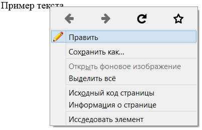

Элемент <menuitem>
| Internet Explorer | Chrome | Opera | Safari | Firefox |
| 8 |
| Android | Firefox Mobile | Opera Mobile | Safari Mobile |
| 8 |
Задаёт команду, которую пользователь может вызывать через контекстное меню. Команда выглядит как текстовая метка, а также дополнительно может содержать небольшую картинку. Сама команда связана с программой на JavaScript.
Значения
- checked
- Устанавливает, что команда выбрана. Используется в сочетании с типом checkbox или radio.
- default
- Выбирает команду меню по умолчанию.
- disabled
- Блокирует команду меню.
- icon
- Адрес изображения, которое будет выводиться перед текстом команды.
- label
- Название команды показываемое пользователю.
- radiogroup
- Задаёт имя группы переключателей.
- type
- Задаёт тип команды.
Также для этого элемента доступны универсальные атрибуты и события.
Закрывающий тег
Пример
<!DOCTYPE html>
<html>
<head>
<meta charset="utf-8">
<title>menuitem</title>
<style>
#edit {
width: 200px;
border: 1px solid #ccc;
display: none;
}
</style>
<script>
function edit() {
document.getElementById('text').style.display = 'none';
document.getElementById('edit').style.display = 'block';
document.getElementById('edit').value = document.getElementById('text').innerHTML;
document.getElementById('edit').focus();
}
function text() {
document.getElementById('text').innerHTML = document.getElementById('edit').value;
document.getElementById('edit').style.display = 'none';
document.getElementById('text').style.display = 'block';
}
</script>
</head>
<body>
<p id="text" contextmenu="menu">Пример текста</p>
<form onsubmit="text(); return false"><input id="edit"></form>
<menu type="context" id="menu">
<menuitem icon="image/edit.png" onclick="edit()" label="Править"></menuitem>
</menu>
</body>
</html>В данном примере в контекстное меню добавляется пункт с текстом «Править», при щелчке по которому происходит редактирование текста (рис. 1). Само меню меняется только при щелчке по абзацу.

Рис. 1. Вид контекстного меню в Firefox
Спецификация ?
| Спецификация | Статус |
|---|---|
| WHATWG HTML Living Standard | Живой стандарт |
| HTML5.1 | Рабочий проект |